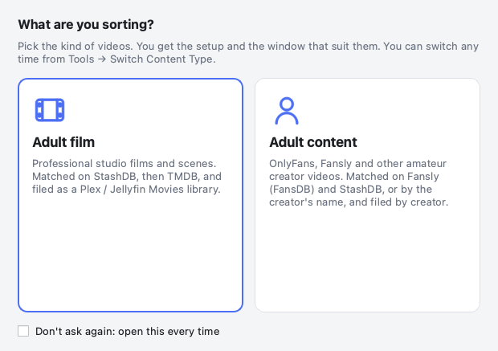
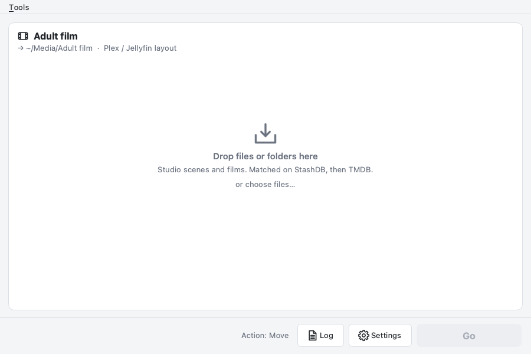
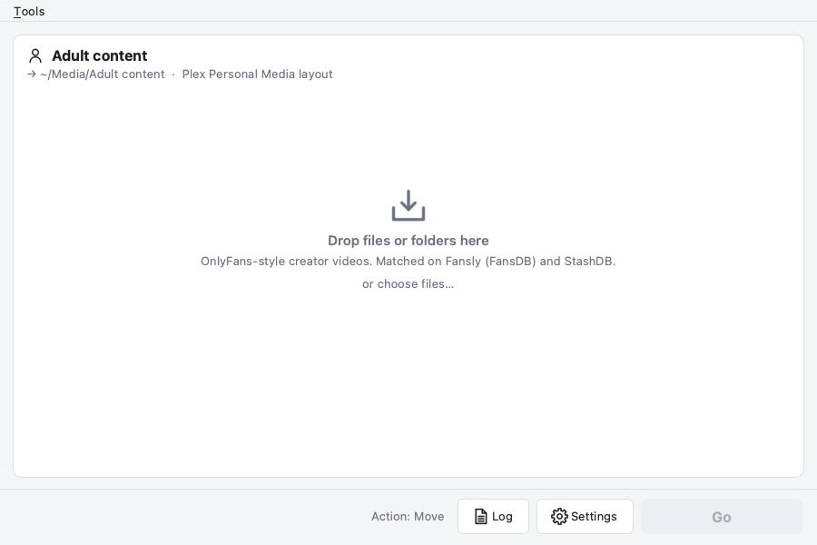

Shoebox
An opinionated file sorter for your adult video library. It matches, renames and tags your files so Plex and Jellyfin show them properly.
- Drop and matchDrop adult films or creator videos. Shoebox identifies them with StashDB, Fansly (FansDB) and TMDB.
- Clean namesConsistent folders and file names, ready for your media server library.
- Rich metadataPosters, backgrounds, performers, studios and tags, written as NFO files and embedded tags.
- Private by designRuns on your machine, with your own optional API keys.



Coming to macOS and Windows · For adults only (18+)